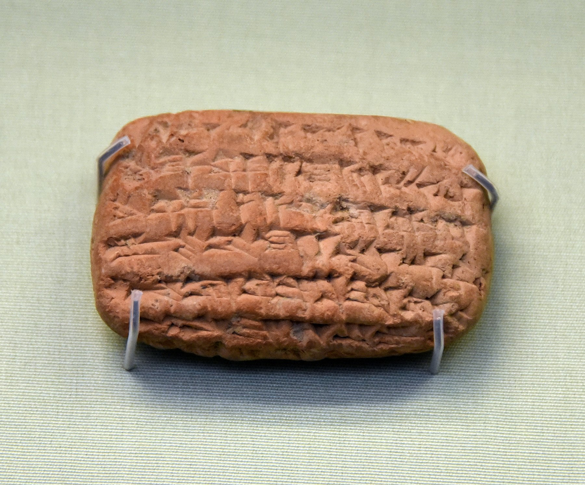

Nebo-Sarsekim Tablet

- Find Name
- Nebo-Sarsekim Tablet
- Description
- A small clay cuneiform tablet, 5.5 cm wide, dated to month XI, day 18, year 10 of Nebuchadnezzar II (c. 595 BC). It records 1.5 minas of gold, the property of Nabu-sharrussu-ukin, the rab sha-reshi (chief eunuch), sent via Arad-Banitu to the Esangila temple in Babylon. The tablet comes from the Sippar sun-temple archive, excavated in the 1870s; the British Museum acquired it in 1920 (ME 114789), and its biblical significance was identified by Michael Jursa of the University of Vienna in 2007.
- Historical Period
- Babylonian
- Evidence Class
- Direct
- Interpretations
- The tablet's name and title match Jeremiah 39:3's 'Nebo-Sarsekim, a chief officer' (rab-saris), present at Jerusalem's fall in 587 BC — just eight years after the tablet's date. The identification is rated 'almost certain' by Jursa on the rarity of the name, the high rank and the close date, and it is a rare non-royal biblical figure confirmed in a contemporary document. Caution: the match rests on the name-plus-title-plus-date combination; the tablet itself is a routine temple receipt, not a record of the siege.
- Alternative Names
- Nabu-sharrussu-ukin Tablet; Tablet of Nabu
- Related Places
- Related Books
- Related Events
- Related People
- Scripture Illuminated
- Biblical Significance
- A routine Babylonian temple receipt from 595 BC names the very official Jeremiah 39:3 places at Jerusalem's fall in 587 BC, confirming the historical accuracy of one of Jeremiah's minor but precise details.
- Artifact Date
- c. 595 BC
- Current Location
- British Museum, London (ME 114789)
- Date Discovered
- 1870s (excavated); identified 2007
- Discovery Location
- Sippar, Iraq
- Timeline Era
- Exile
Awaiting Review Not yet checked against scholarly sources. Treat its claims as provisional until this entry is reviewed. About verification
Sources: https://en.wikipedia.org/wiki/Nebo-Sarsekim_Tablet
https://www.biola.edu/blogs/biola-magazine/2007/rare-find-supports-book-of-jeremiah-solves-puzzle-
https://www.biola.edu/blogs/biola-magazine/2007/rare-find-supports-book-of-jeremiah-solves-puzzle-
Last reviewed: not yet reviewed